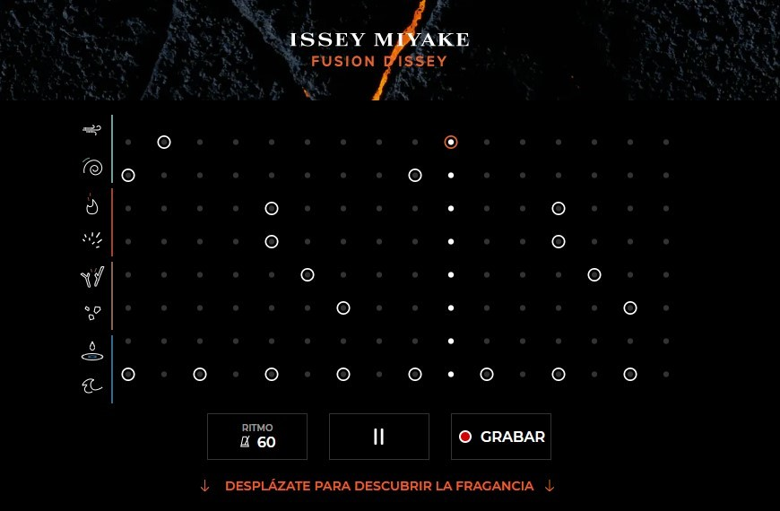

La mejor pagina para mantenerte informado sobre la moda, tendencias, tecnologías y mucho más
BELLEZA
NOTICIAS
MODA
Tecnología
Esta es la plataforma de Spotify con la que puedes crear la playlist de amor definitiva para ti y tu pareja (o crush).
Dice Bonnie Tyler en If I Sing You a Love Song que las canciones de amor duran más de lo que suelen hacerlo las parejas y que por eso quiere dejar constancia de lo que siente por su enamorado en los casi cinco minutos para la posteridad que dura el tema. Y es que, muchas veces, una canción de amor es capaz de expresar mejor que nosotros mismos lo que nos gustaría decirle a otra persona. Por algo con los casetes nacieron las mixtapes que han legado a nuestros días reconvertidas en playlists, un elemento clásico de cortejo. Ahora Spotify les da una vuelta de tuerca.
Duo Love Songs
es un site que ha lanzado la plataforma de streaming para que sus usuarios puedan generar playlists de amor con portadas customizables que definan el tono y conexión de cada relación. Algo que Spotify ha bautizado como "la experiencia de amor definitiva". Para ello, hay que introducir, en primer lugar, vuestros nombres y contestar a algunas preguntas de personalidad como desde cuándo estáis juntos, cuál es vuestro tipo de cita en casa favorita o incluso decantarte por la canción que mejor defina lo vuestro entre tres opciones.
Los mejores videojuegos del verano con los que pasar horas disfrutando (para Nintendo Switch, PlayStation, XBox One y PC)
Los videojuegos son el sector de ocio que más ha crecido en los últimos años. En 2017 el sector de los videojuegos en España facturó 1.359 millones y ya en 2018 sus cifras doblaban a las del cine y la música con un crecimiento del 12,6% y una facturación que superaba los 1.500 millones euros. Hasta la moda se ha fijado en su potencial y ha comenzado a colaborar y colarse en videojuegos tan conocidos como el Animal Crossing: New Horizons, en Los Sims, donde hemos podido ver colaboraciones con Mac o en los e-sport y sus competiciones. Nosotras somos fans (muy fans) de los videojuegos, y como auténticas gamers queremos jugar este verano a los mejores, así que hemos consultado a nuestros compañeros, los expertos de Vida Extra, sobre cuáles son los mejores juegos del año para para Nintendo Switch, PS4, XBox One y PC, y este es el resultado.
The Last of Us Parte II
Final Fantasy VII Remake

Si aún no has disfrutado de esta maravilla de juego estás perdiendo un tiempo valioso. No solo es otro gesto nostálgico de la industria, sino uno de los bombazos del año según los expertos. Disponible para PS4.
Moda
16 prendas y accesorios que no podemos creer que hayan llegado a las segundas rebajas (dale click a las fotos para ver mas info)
El look que Bella Hadid escoge para jugar al tenis y que parece sacado de un videoclip noventero de Britney Spears
XJacquemus respeta la distancia social en su desfile Primavera-Verano 2021 celebrado en un (espectacular) campo de trigo.
Xbelleza
Un viernes más aquí venimos a poner la guinda del pastel a nuestra semana con nuestros imprescindibles con los que sentirnos guapas y bien. tres opciones y consejos en los que aunamos belleza, bienestar, ocio y fichajes que nos parecen de lo más interesantes y que sentimos la necesidad de compartir con todos. Así que ahí van.
Una experiencia inmersiva e interactiva
¿Qué es esto? Os preguntaréis muchos. Pues bien, se trata de una iniciativa de Issey Miyake parfums que ha lanzado “Sounds of Fusion” una experiencia que nos la describen, precisamente, como inmersiva e interactiva, creada para celebrar el lanzamiento de su nueva fragancia masculina: Fusion d’Issey (44,95 euros) que ya os voy diciendo que es un aroma alucinante (se ha convertido en mi nuevo favorito de hombre).
“Sounds of Fusion” es una caja de ritmos
inspirada por la naturaleza en estado de fusión, un juego que sorprenderá a novatos y a músicos experimentados que se inspira en el tradicional género musical que toma los sonidos orgánicos como base. Solo escucha: el agua cayendo en las rocas, el viento soplando a través de las hojas, la lava ardiendo, las piedras chocando… La experiencia se compone de: 4 temas musicales principales inspirados en la naturaleza: aire / lava / agua / sonido de rocas. 8 sonidos que representan cada uno de los temas, como diferente interpretaciones de cada uno de ellos. Un botón de PLAY y PAUSE, para comenzar o parar el reproductor. Un botón de grabar y compartir que permite descargar la grabación una vez terminada para publicarla en diferente redes sociales.
Un planazo

En nuestra recomendación de plan de fin de semana, vacaciones o lo que tengamos por delante, hoy nos vamos a perdernos al Alto Ampurdán en las cercanías del pueblo de Avinyonet en Gerona. Allí, encontramos el precioso Mas Falgarona Hotel Boutique & Spa, de Logis Hotel, una espectacular masía del siglo XV con aires provenzales, totalmente reformada, ubicado en una propiedad de 6.000 m2 donde disfrutar de la naturaleza y de un paisaje de excepción. Un lugar perfecto para relajarse, disfrutar de unas merecidas vacaciones y de los espectaculares atardeceres donde también encontramos un lujoso spa situado en el antiguo pajar para disfrutar de los diferentes tratamientos que ofrece, así como de su piscina con hidrojets o su sauna finlandesa.
Un libro Gratuito
Esta semana os hablamos del nuevo libro ilustrado Inspiring Stories by Evax, formado por cinco historias de mujeres increíbles para inspirar a las jóvenes a un futuro sin límites.
Un libro que se ha presentado hace unos días y que tiene el objetivo de aumentar la visibilidad de modelos y roles femeninos en diferentes áreas profesionales y así poder inspirar a las niñas y reforzar su confianza. Así, nos encontramos a dos deportistas, una bombera, una científica y una compositora que cuentan su historia a través de la pluma de Alejandra G. Remón y las ilustraciones de Estudio Santa Rita, del que Cosima Ramírez ejerció de embajadora.Y sí, es gratuito y lo podemos conseguir en este enlace.
noticias
Lo nuevo de J.Balvin, Dua Lipa, Selena Gomez y Katy Perry acompañan este fin de semana (y podrían ser los hits del verano 2020)
Tainy y J.Balvin - Agua
Para todos los fans de Bob Esponja -que no son pocos- ahora tienen un nuevo motivo para celebrar la llegada del verano. La esponja más famosa presenta su película con una BSO de lujo: Tainy y J.Balvin ponen voz a la canción principal llamada Agua.
Dua Lipa - Hallucinate
Dua Lipa no tiene intención de echar el freno a su carrera musical y su nuevo single, Hallucinate, promete ser una de las canciones favoritas de este verano 2020. Desde la primera toma de contacto, un buenrollismo se instala en las venas haciéndote bailar (sin parar).
Kygo y Kim Petras - Broken Glass
No hay verano sin Kygo, y este 2020 se alía con la voz de Kim Petras para enamorarnos con un nuevo tema temazo. Bajo el nombre de Broken Glass, esta canción promete convertirse en la nueva canción bucle de la semana.